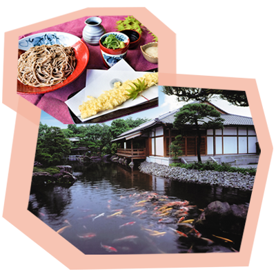
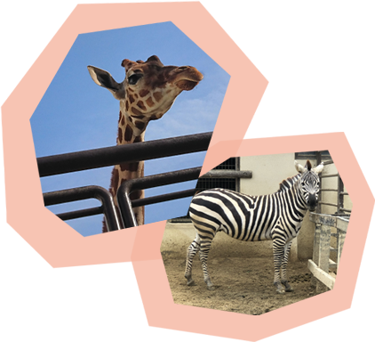
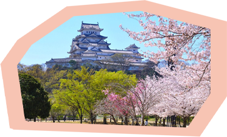

姫路城西御屋敷跡庭園「好古園」

9つの趣の異なる庭園群からなる日本庭園。園内のレストラン「活水軒」では、穴子を使った料理が人気です。本格的数寄屋造りの茶室「双樹庵」では、優雅なひとときをお楽しみいただけます。
姫路市立動物園

動物園に到着！ゾウやキリン、レッサーパンダやカピバラなど、100種類以上の大小様々な動物を見ることができます。1日2回開催される、ヤギやモルモットなどと接することができる「ふれあいタイム」が人気です。
世界文化遺産・国宝「姫路城」

デートの最後はお城の大天守へ！シラサギのように白く美しい外観から別名“白鷺城”とも呼ばれており、約100メートル（海抜）の高さから市街を眺める事ができるのはここだけです。桜の時期は、特にお薦めです。